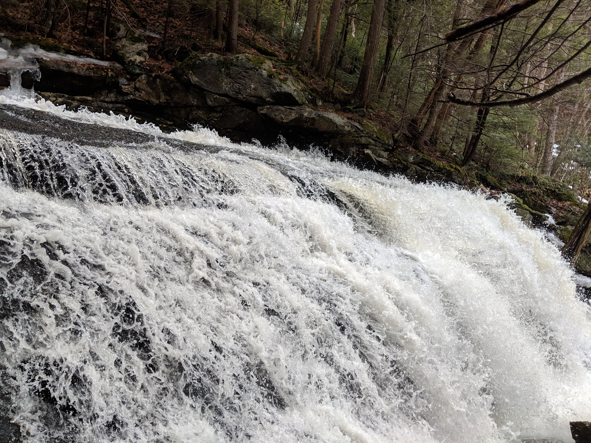
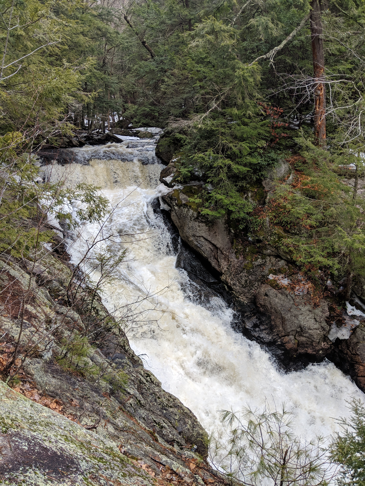
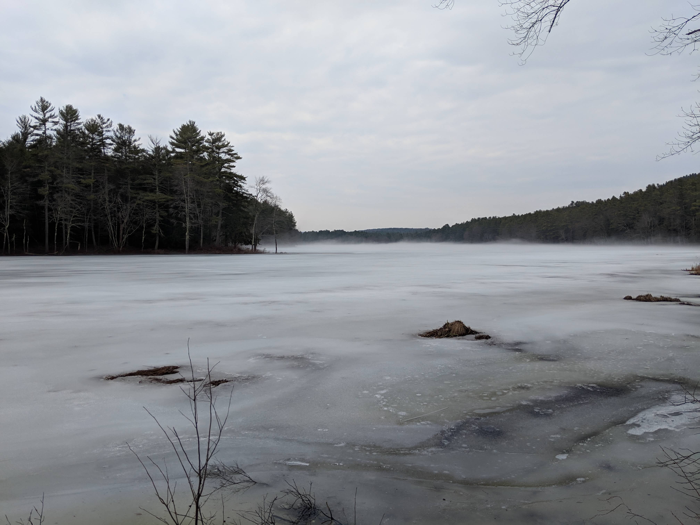
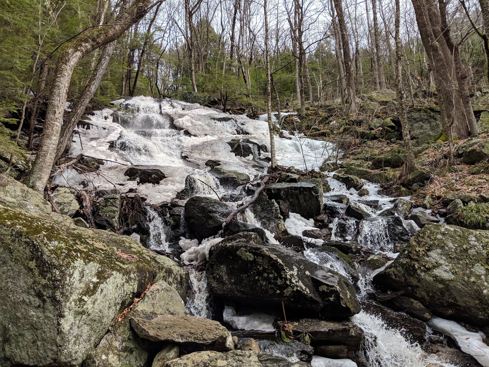
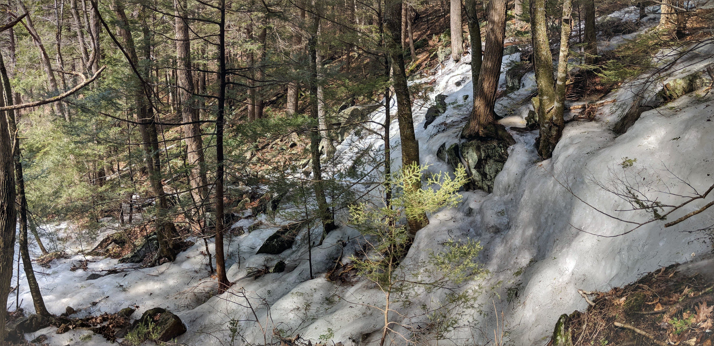
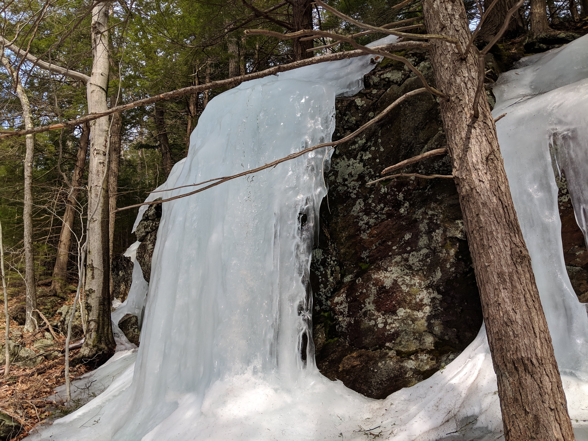
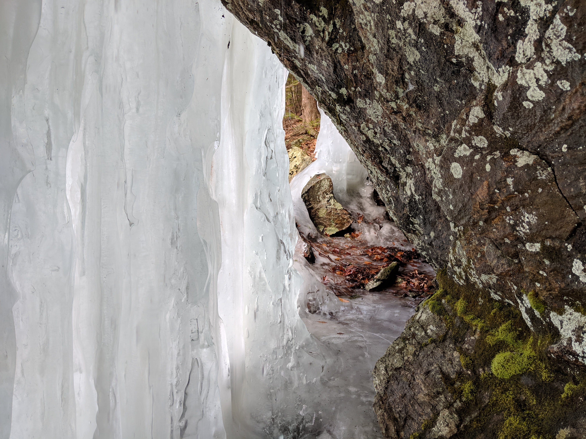
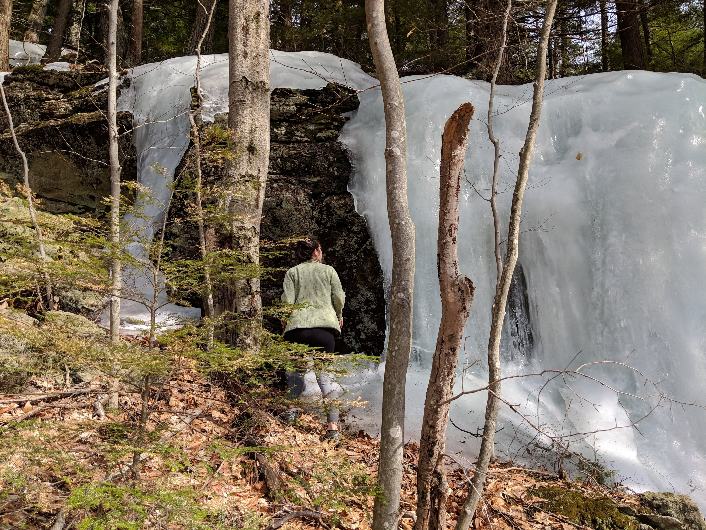

Distance
Distance Elevation
Elevation Observed Wildlife
Observed WildlifeThis is a fun hike I've done multiple times since it's only ninety minutes from Boston. The water is guarenteed to be flowing no matter what at Doane's falls, but it was esepecially roaring on this visit in late March. It was also covered in snow and ice which added to the beauty. Spirit Falls is just a two mile lakeside walk away and is pretty cool in itself. The top was largely frozen over during this trip. We also explored "The Ledges." I have found outlooks over Tulley River before, but the views elluded my partner and I. We did find a cool ice wall.
Doane's Falls






Spirit Falls




